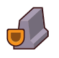
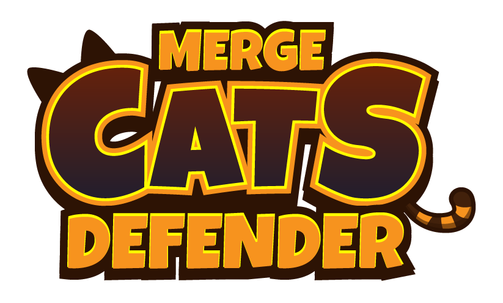

УРОВЕНЬ 01 / 05Квартал
180

БАРРИКАДА 100%

ОТ ПЕРВОГО КВАРТАЛА ДО ПОСЛЕДНЕГО
Держим оборону.
Пять уровней. Один отряд.
Нанимай котов, меняй скины на более сильные и защищай баррикаду.
Готовим квартал…
СИЛА ЗАВИСИТ ОТ СКИНА
Подкрепление
Выбери позицию для бойца
Бой приостановлен
Теперь нажми на вторую позицию выше. Бойцы поменяются местами.
Новые скины открываются по ходу уровней. Купленный отряд и монеты переходят дальше.